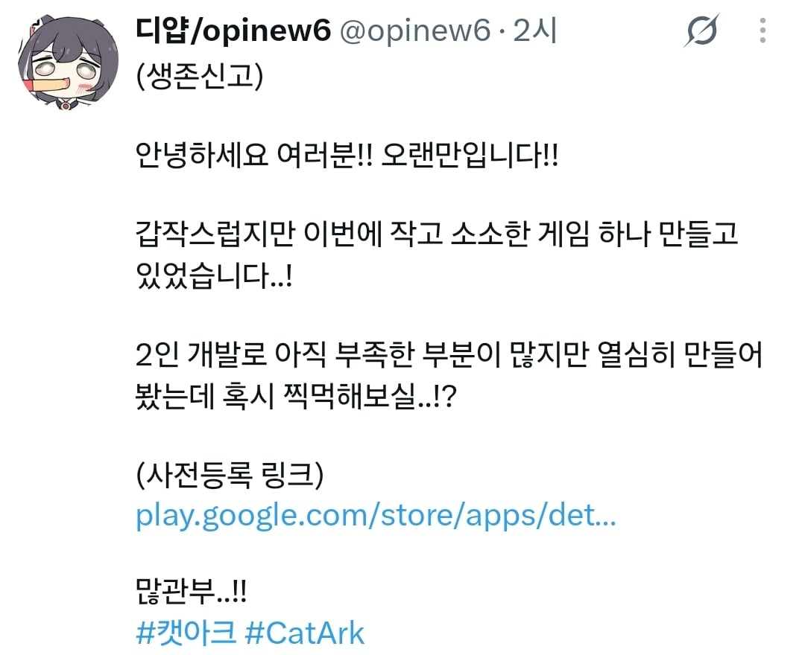

고전 트릭컬 작가 근황
댓글
흠..빤스..흠..
디얍 붙잡아놓고 피폐물 그리게 하고 싶다
그 장례식 육개장 만화가 맛도리였는데
피폐꽤잘말아줌
트릭컬 메인작가가 원래 피폐물 전문간데
트릭컬 팬게임임? 귀엽네
코이츠 그림체까지 긴빠이 당한
건강만 좀 좋았더라면 트릭컬 아트 디렉터로 계속 있었을텐데..
건강 문제보다는 뭔가 다른 트러블 있던 거 아니냐는 추측도 있던데
그래서 어디서함
볼따구의 왕이였던 것

팬티보여준다고?
오.. 세로게임 좋아..
빤쓰 보여드림 시벌 ㅋㅋㅋ
근데 트릭컬 시절이랑은 또 그림체가 변하긴해서...
트릭컬도 초장기에 비하면 좀 변한거 아님?
이쯤되면 뽈따구는 하나의 장르로 보는게...
그림체 더 귀여워졌네
이거보고 트릭컬 보니까 트릭컬 그림체가 틀딱처럼 보임..
예상댓글 : 트릭컬짭인가?